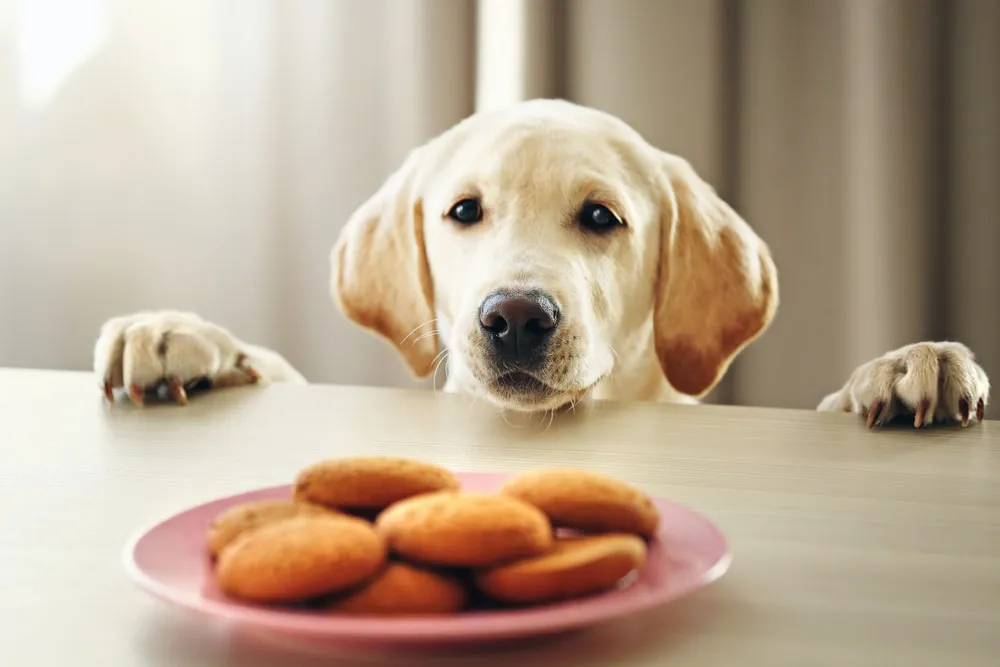

Puppy Cookies!

Homemade Dog Treats are the best way to show your pet that you love them
like family! These Homemade Peanut Butter Dog Treats are an easy dog
biscuit recipe that your fur baby would request every week if they could.
Ingredients
For the Dog Treats
- 2 1/2 cups whole wheat flour
- 1 large egg
- 1 cup peanut butter
- 1 cup water
- 2 TBSP honey
For the Frosting
- 2 TBSP peanut butter
- 1 TBSP honey
- 1/3 cup cornstarch
- 3-4 TBSP hot water
Steps
-
Preheat oven to 350°F. Line a baking sheet with parchment paper. Set
aside.
-
In a large bowl, combine flour and the egg. Add the peanut butter,
water, and honey, and stir until you have a stiff dough. The dough
becomes very firm and sticky. You may need to use your hands, or the
paddle attachment on your mixer. 2½ cups whole wheat flour,1 large egg,1
cup peanut butter,1 cup water,2 tablespoons honey
-
On a lightly floured surface, roll out the dough about ½-inch thick and
use a cookie cutter to make fun shapes. The treats barely spread and
rise, so get creative with your shapes.
-
Bake for 18-20 minutes, until golden. Once done, set aside to cool. (If
you have smaller cookies, use less time, otherwise the bottom might
burn.)
-
To make the frosting, combine the peanut butter and honey in a
microwavable bowl, and heat in the microwave in 15 second increments,
stirring in between, until melted. 2 tablespoons peanut butter,1
tablespoon honey
-
Add the melted peanut butter mixture to the cornstarch and stir until
just combined. ⅓ cup cornstarch
-
Slowly add in the water 1 tablespoon at a time until you have reached
the consistency that you would like. For a thinner frosting, add more
water. 3-4 tablespoons hot water
-
Add the frosting to a piping bag and pipe designs on top of each dog
treat.
-
Frost the treats with the peanut butter/honey mixture for an even more
tempting cookie.